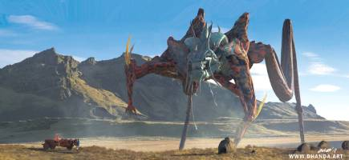

Mamíferos
Los mamíferos son los reyes de la tierra. Primates, ungulados, marsupiales... Estos animales pueblan la superficie terrestre siendo los más notables.
Desde el más majestuoso de los Ekas al más pequeño de los conejos cornudos, en The Wild podrás encontrarlos campando a sus anchas por sus hábitats naturales y podrás interactuar con los más mansos en nuestros eventos de relax y unión.
